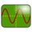

libiio Documentation
{kind=link}
Welcome to libIIO
Thanks for your interest in libiio, a C/C++ library that provides generic access to Industrial Input Output (IIO) devices. IIO started as a Linux kernel subsystem to support devices that include analog-to-digital converters (ADCs) and/or digital-to-analog converters (DACs). While libiio continues to provide an easy interface to the Linux kernel IIO subsystem, it has also expanded beyond that, and is now just as common to see this used inside an embedded system or hypervisor as it is on a host PC.
It is portable: Using a single cross-platform API, it provides access to IIO devices on Linux, macOS, Windows, etc across local and remote (USB, Network, Serial) devices. The library is composed of one high-level API, and several backends:
The local backend, which interfaces the Linux kernel through the sysfs virtual filesystem
The remote backend, which communicates to an iiod server through a network, USB or serial (wired, USB CDC, or Bluetooth SPP) link. The iiod server can run on a:
Linux host (an IIO daemon is included as part of libiio), this would typically communicate to a libiio client over the network or USB
A deeply embedded, resource constrained system (like Arduino) managed separately as tiny-iiod; this would typically communicate to a libiio client over the network or serial
It is entirely user-mode: No special privilege or elevation is required for the application to communicate with a device. One of the most powerful things about libiio is its Remote Procedure Call style interface. Moving backends from USB to Networking to local embedded does not require any code changes. The users of libiio do not need to code any differently for the remote interaction, making it easy to move from remote (debug on PC over Ethernet) to local (deployed on embedded Linux).
What platforms are supported?
Any host running Linux, macOS, Windows, or OpenBSD/NetBSD, should be trivial to get libiio running on. If you are interested in porting to other hosts that support either networking (socket interface), libusb or serial, it should be very straightforward. Pull Requests are always reviewed, and well written ones are normally accepted.
The local backend and Linux daemon can run on any embedded Linux based system, from purpose built systems like PlutoSDR or ADALM2000 to Raspberry Pi or BeagleBoard to Jetson. tiny-iiod requires a modern C compiler and is known to work on a variety of non-Linux frameworks including Mbed and FreeRTOS.
Sounds good! How do I get started?
If you are using Linux, chances are your distribution already includes libiio, so you probably just need to reference the iio.h header in your source.
For other platforms, you are encouraged to use one of our release builds. If you want to use the very latest, you have the option to use a nightly build or build from source. Please check the Downloads menu.
If you prefer, you can also access the source directly from GitHub.
Once you have secured your access to the library and its header, please check the libiio API or the libiio examples.
Where is (insert my favourite language) support?
The mainline library is written in C, and has built-in bindings for C++, Python and C# (C-Sharp). Node.js and Rust are maintained outside the main repo. If you are interested in creating more language bindings, please reach out to the developers by posting an issue on GitHub.
Help and Support
If you have any questions regarding libiio or are experiencing any problems following the documentation or examples, feel free to ask us a question. Generic libiio questions can be asked on the GitHub Issue tracker. Since libiio provides connectivity to the kernel’s IIO framework - many times the problem is actually in the driver. In this case, contact your favourite kernel developer. If you are using an Analog Devices component, feel free to ask on their Linux support forums.
Frameworks and Applications
Use libiio with your favourite open source or commercial signal processing framework, visualization tool or application.
Framework/Application |
OS |
Description |
|---|---|---|
Windows, Linux, macOS |
iio_info, iio_attr, iio_readdev, iio_writedev, iio_reg for interacting with IIO devices from your favorite shell. These are included in the default builds, but many distributions package them into a separate libiio-utils package. When you want to try a simple example, check these out. |
|
Windows, Linux, macOS |
Pyadi-iio (pronounced peyote) is a python abstraction module for ADI hardware with IIO drivers to make them easier to use. The libIIO interface, although extremely flexible, can be cumbersome to use due to the amount of boilerplate code required. This Python module has custom interfaces classes for specific parts and development systems which can generally make them easier to understand and use. |
|
Chrome OS |
The libmems provides a set of wrapper and test helpers around libIIO. It is meant to provide a common foundation for Chrome OS to access and interface IIO sensors. |
|
Use libIIO to Connect MATLAB® and Simulink® to PlutoSDR, ADRV9361-Z7035 RF SoM, or AD9361 based evaluation boards, and other RF platforms, high speed converters, and sensors to prototype, verify, and test practical systems. Request a zero-cost trial and then explore and experiment with a variety of signal processing and radio examples. |
||
Linux, macOS |
GNU Radio is a Free and Open-Source Toolkit for Software Radio, primarily supported on Linux operating systems. It has both generic IIO blocks, and blocks for specific IIO devices like the PlutoSDR. |
|
 IIO Oscilloscope |
Windows, Linux |
The IIO Oscilloscope is an application, which demonstrates how to interface various IIO devices to different visualization methods on Linux and Windows. |
Windows, Linux |
SDRangel is an Open Source Qt5 / OpenGL 3.0+ SDR and signal analyzer frontend to various hardware. Check the discussion group and wiki. While SDRangel seeks to be approachable, it is targeted towards the experienced SDR user with some digital signal processing understanding. It supports libIIO for the PlutoSDR, and can be extended to support many other IIO devices. |
|
Windows, Linux, macOS |
Scopy is a multi-functional software toolset that supports traditional instrument interfaces with Oscilloscope, Spectrum Analyzer, Network Analyzer, Signal Generator, Logic Analyzer, Pattern Generator, Digital IO, Voltmeter, Power Supply interfaces for the ADALM2000. It is built in Qt5 in C++, and is available under an open source license on github. |
|
Embedded Linux |
The Legato Application Framework started out as an initiative by Sierra Wireless Inc. to provide an open, secure and easy to use Application Framework to grow the “Internet of Everything”. Legato uses libIIO to interface with real world sensors. |
|
Embedded Linux |
From idea to prototype to product, mangOH® is industrial-grade open source hardware designed to address common IoT pain points and deliver 90% of your prototype out-of-the-box so you can focus your time and resources building the next killer IoT application and bringing your products to market sooner. mangOH uses libIIO to interface with real world sensors. |
Note
Reference on this page to any specific open source or commercial product, project, process, or service does not constitute endorsement, recommendation, or favoring by any libiio developer. If you want to add your project to this list, please send a pull request.
Contributors
{kind=link}
The libiio would not exist without the generous support of Analog Devices (Nasdaq: ADI), a leading global high-performance analog technology company dedicated to solving the toughest engineering challenges. While many of the developers are full time ADI employees, libiio is released and distributed as an open source (LGPL and GPL) library for all to use (under the terms and obligations of the License).
Licensing
libiio has been developed and is released under the terms of the GNU Lesser General Public License, version 2 or (at your option) any later version. This open-source license allows anyone to use the library for proprietary or open-source, commercial or non-commercial applications.
Separately, the IIO Library also includes a set of test examples and utilities, (collectively known as iio-utils) which are developed and released under the terms of the GNU General Public License, version 2 or (at your option) any later version.
The full terms of the library license can be found at: https://opensource.org/license/LGPL-2.1 and the iio-utils license can be found at: https://opensource.org/licenses/GPL-2.0